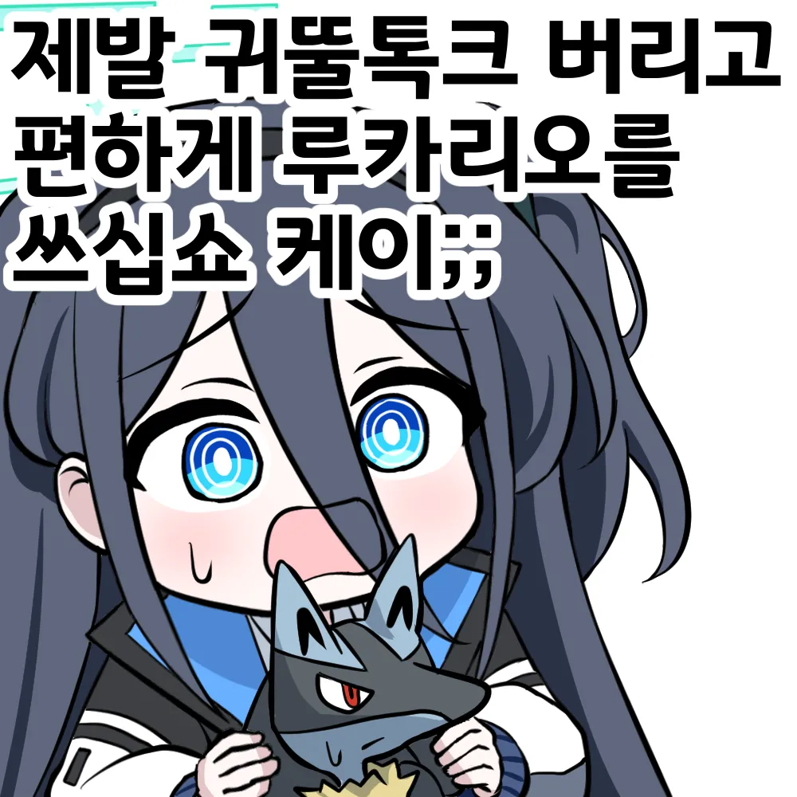
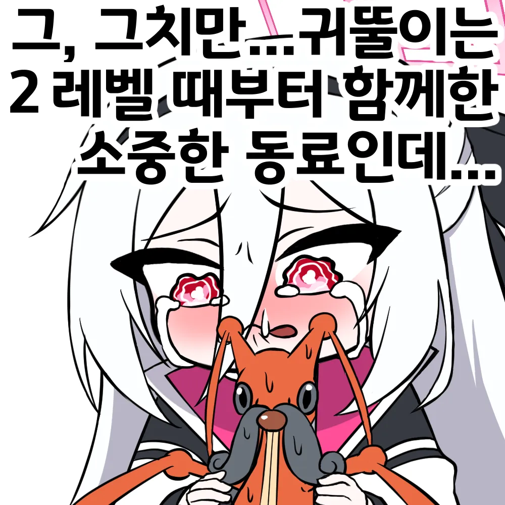
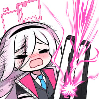
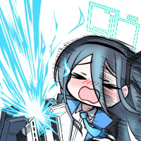
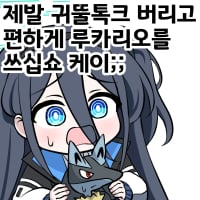
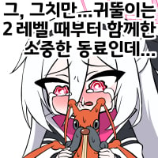

"뀌둘톡크 꼬추 큰데..."


아오 충간

포켓몬은 성능보다 애정이 중요하지 그래서 난 에써르♀(중요)를 메인으로 썼고 쌌지
헤으응...
형냐 나는 밀탱크...
뭔가 해서 보고왔는데 수컷이 더 꼴리게 생겼는데
성능도 수컷이 거 좋음
귀뚤이는 그걸 원할까?
내친구진석
저건 니 친구도 인정한 병신이야
내친구의 자식들
병1신 노목이 동덕이 등등등
병1신은는 진석을 슬프지 않게 하려고 버텼다!
난 귀뚤톡크 극혐했음.
생긴것도 뭔가 징그럽고 울음소리가 소름돋는 불쾌감이 있어.
근데 겜프릭인지 닌텐도인지는 몰라도
엄청 밀어주는 픽이더라 ㅋㅋㅋㅋㅋ
타노스 당했던 소드쉴드때도 살아남았던게 레전드임
미쿠랑 콜라보까지 했음 아마 늙크크 운영진 픽인듯
출시 이후로 안나온적이 없을껄?
링링링링링우오오옹~~
저 쓰레기를 2렙부터 키운거보면 뭘 키워도 잘 키우겠네 ㅋㅋㅋ
딥상어동 키웠으면 난천도 재꼈을듯
그래서 친구를 잘 사귀는게 중요한거지 초반 포켓몬중에도 쓸만한 애들이 있는데 왜 하필 병신이랑 친구가 됐냐
시발 2렙부터 참기 하나로 진화할때까지 키웠단 말이냐 ㄷㄷ
요즘은 몸통박치기 가지고있음
병일신을 키우라는거냐
병1신
만두콘은 이왕걸을 슬프지 않게 하려고 버텼다!
나도 이래서 스타팅포켓몬 끝까지 라인업에 있음 ㅋㅋ
울음소리 존나 특이해서 좋음ㅋㅋ
만두콘!
블아는 2성애들도 일단 4,5성 찍기는 쉬워서 초반애들도 은근히 오래쓰긴 하더라.
ex) 츠 바 키
모모이가 진짜 2성 GOAT임
도장 하나깨자마자 랄토스 잡아서 다행이다 평생가자 가디안아

400족도 안되는 쓰레기네
루비버젼인가 펠리칸 모티브 새 잡아서 애정주고 키웠는데 치코리타급이었음 ㅠㅠ

